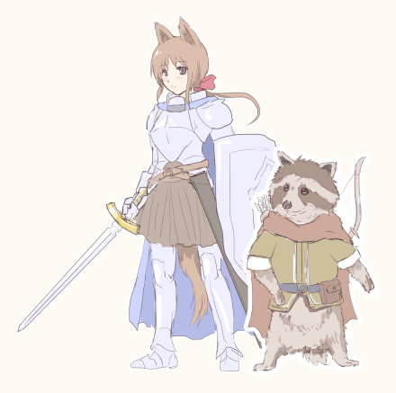
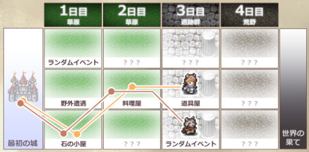
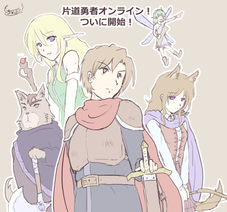
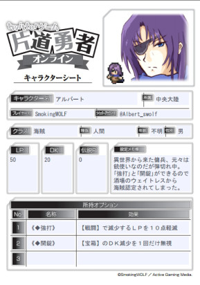
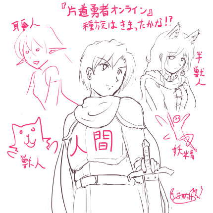

シルバーセカンド開発日誌
2016年06月
■
2016-06-25 (土) 片道勇者TRPG 5 連載!▼【片道勇者TRPG その5 連載】
ということで『片道勇者TRPG』が発売して一週間が経ちました！
ただいま、連載リプレイ用の収録を進めております。
＜プレイヤーキャラクター 4人のうちの2人＞

※騎士さんの方はプレイ中で一回も剣を使ってないので武器が変わりそう。
セクハラ卓になったり不運卓になったり相変わらず脱いだりと
相変わらずなセッション風景なので、<自家製>片道勇者TRPGなどを
お楽しみいただけた人には似た方向性で楽しんでいただけそうな雰囲気です。
片道勇者だけど新たな世界で繰り広げられるストーリー、よければぜひご期待ください！
いま全体の36％くらいの進行度です。
無理せず進めるとペース的には8月リリース予定になりそうな予感がします。
【アルバート片道冒険記】
ツイッターゲーム『片道勇者オンライン』も好評開催中です！
見本プレイであるアルバートの冒険をまとめたコンテンツを作成してみましたので、
よければぜひご覧ください。これでプレイ感覚が掴めると思います。
『アルバート片道冒険記』
直接アルバートのTwitterアカウントをご覧になりたい方は→@Albert_swolf
この『片道勇者オンライン』では、昨日から
「今からはじめる初心者さん向けコンテンツ」である「女神の加護」なども
導入してくださったりして、色々と試している最中です。
進行度によって、楽しみ方や大きな格差が生まれたりしないバランスのつもりです。
実際にプレイしてみたいと思った方は ↓ からぜひ！
ツイッターゲーム『片道勇者オンライン』(ｱｰｶｲﾌﾞ)
【ツイッターゲームとは？】
1日1回、診断アプリでランダムイベントを発生させ、
その数値結果などを反映して進めていくゲーム。
片道勇者オンラインでは、「生命力」や「闇との近さ」パラメータが変化したり、
アイテムを手に入れたり、接頭辞の組み合わせでカオスなイベントが起きたりする。
結果に対して演出を入れたり、診断結果に基づいてお絵かきして楽しむ人もいる。
【診断の例】
【街／交流／伝説Ｐ＋３】暑苦しい理術士に、研究のためにアルバート＠北の体をすみずみまで“分析”させてくれと頼み込まれた。覚悟して承諾するならＬＰ－３、ＤＫ－３し、伝説Ｐ＋４。断るならＤＫ－１。
#片道勇者オンライン街 アッー！！
アルバート/海賊/北 片道勇者オンライン (@Albert_swolf) 2016年6月23日
【片道勇者・片道勇者プラス Steamセール中です！】
7/4頃までSteamで片道勇者（One Way Heroics）のセール中です！
片道勇者が-75％の 87円！ 片道勇者プラス（DLC扱い）は－60％の 260円 です！
両方合わせても 347円！ 必要な方はいまのうちにぜひ！
SteamでもWebmoneyが使えますので、うちのサイトで開発記などをご購入になった余りも使えます。
よければご検討ください。
【Paypal導入中です】
それと、連載収録と並行として、ただいまPaypalのシステム導入も行っています。
導入が済めばクレジットカードでパッとゲームをご購入できるようになりますので、
ひとまず最低限、片道勇者プラスと片道勇者開発記だけでも
早めに対応したいなと考えております。 ■
2016-06-18 (土) 片道勇者TRPG 4 解説！▼【片道勇者TRPG その４ 発売！ 解説します！】
ということで本日6/18、ようやく書籍『片道勇者TRPG』が発売されました！
ワーパチパチパチ！

ということで、発売したので早速『片道勇者TRPG』についてご紹介です！
【まず「TRPG」って何？】
一言で言うなら「ルール付きのごっこ遊び」です！
「GMという司会者」と「数人のプレイヤー」が集まり、プレイヤーは
GMの出した試練に対してキャラクターの行動を演じつつ、ゲームを進めていきます。
たまに「３ｍの穴を幅跳びで飛び越えられたか？」といった、成功したか失敗したか
判断が付きづらい行動があるので、そういう場合はサイコロの出目で成否を決定します。
そこの「判定」でワーキャー言うのが楽しいゲームです。
なおコンピュータゲームと違い、キャラクターのデータは自己管理です。
【『片道勇者TRPG』 はどんなゲーム？】
まず一番大きな点を述べると、『片道勇者TRPG』は
縦３列×横一定日数のエリアを右に進行しながら冒険していくゲームです。
＜ゲームの進行図 これは4日の旅＞
※以下の状況なら、2日目までの地形はすでに闇に呑まれたことになっています

マップは１日目以外は未知なので、「偵察」したり、
実際に行ってみないと何が起きるか分かりません。
各プレイヤーは、分かれて進むことも可能です。
「魔王を倒す」か、「世界の果てにたどりつく」と一周が終了します。
……が、実はゲームの主目的はその２つではありません！
【ゲームの主目的】
ゲームの目的は、各PCに与えられた秘密の「クエスト」をこなしていくこと！
「え、魔王倒すことじゃないの？」と思われるかもしれませんが、
真の目的は「クエスト」のほうにあります！
もちろん、クエストクリアの条件として「世界の果てにたどりついた」や
「魔王を倒した」といったものも作れますので、
GMさんが正当派なゴールを設定することも普通にできます。
ただ、魔王撃破などが常に「主」ではないよ、ということですね。
ルールブックに書いてある基本クエストだと、
プレイ内で「魔王とは別の試練が新たに発生するクエスト」や、
「旅を楽にするクエスト」「逆に難しくするクエスト」などがあります。
一例としては、「すごく強い敵と戦って強力な『特徴』を解放する」といったクエストですね。
この場合、「魔王を倒す」のはオマケになります。
また「クエスト」には、攻略していくと次の段階のクエストがオープンされて、
物語が進んでいくものがあります。そうやって連続クエストを積み重ねていくプレイを、
「キャンペーンシナリオ」といって、続き物のお話として表現されます。
基本的には、「キャンペーンの最後のクエスト」で大ボスと戦う感じになるでしょう。
クエスト進行は１プレイ（＝勇者の１人生）あたりだいたい１回分なので、
基本的には何度も転生しながらストーリーを進めていくことになります。
１ゲームが終わると【伝説P】がもらえて、新たな特徴を解放できたり、
次元倉庫を拡張できたりします。この辺りの流れも実に原作再現！
【１日のアクションについて】
上に掲載したマップは４日の旅をあらわしたものですが、
さらに１日の間に何が起きるかが分かれば、
このゲームの全体の流れをおおまかに掴めたといっていいでしょう。
１日の間に発生するイベントは、以下の流れとなっています。
●昼イベント（強制）： マスに設定されたイベントが実行される。強制。
店に出会ったり、ダンジョン探索したり、山賊に襲われたりする。
↓
●魔王遭遇（強制）： ２、４、６日目の昼イベント後のみ発生。魔王が出てくる。
↓
●夜イベント（自由）： いわば自由行動。偵察したり仲間と交流したりできる。
↓
そして次の日へ……。
各イベントでは、「能力値＋２Ｄ６（サイコロ２個を振った合計）」の結果で
物事がうまくいったかどうかを判定します。
能力値はおなじみの「筋力・敏捷・生命・知力・意志・魅力」の６種類！
使う能力はその都度、GMに指示されます。
同じマスに味方がいれば、「協力」して能力値を足すこともできます。
（※ 最大で、互いの【好意】＝仲良し度の分まで）
他にも「ジャッジ」と呼ばれるシステムがあり、ロールプレイや演出をすることで
判定に＋１のボーナスをもらえる処理が明文化されています。
このあたりも昔ながらのTRPGの「PCの演出による補正」を
うまいことシステム化した感じで面白い部分です！
「ロールプレイとかいきなりできないよ！」という人も安心！
何も思いつかなければ、演出をやらずにそのままサイコロを
振ればいいだけなので、初心者の人も安心です。
【シンプルでアツい戦闘！】
『片道勇者TRPG』では、通常戦闘は1回の攻撃で終了します！
シンプル！ すばやい！ 簡単！
ただし敵に攻撃を当てるためには「攻撃判定」という判定に成功する必要があり、
仮にうまく攻撃が当たっても、「ダメージ算出」が必要です。
もし同じマスにいる味方全員のダメージを足しても敵を撃破しきれなかった場合は、
【反撃ダメージ】や、余計に疲れるペナルティを受けてしまいます。
逆に、「攻撃に成功」し、「高いダメージを出して敵LIFEを削り切れれば」、
なんと無傷で完全勝利することができます！
なお勝敗にかかわらず、戦闘は１攻撃で即決着します。
おなじみの【強打】スキルでダメージを増したり、
逃げるときには【ダッシュ】スキルを使えたりと、
搭載スキルの機能はほぼ完全に原作の雰囲気を維持！
なお、魔王との戦いだけは特別で、1回の攻撃では終わりません。
毎ターン反撃を受けながら、徐々に魔王のLIFEを削って倒すことになります。
ということで、こんな感じでイベントをこなしたり、
戦闘したりしつつ、それぞれの「クエスト」を段階的にこなしていって
真に世界を救うために駆け回るのが『片道勇者TRPG』です！
ざっくり流れを説明してみましたが、いかがでしょうか。
ルールブックにはPC同士が仲良く進める感じのクエストのみが紹介されていますが、
アイデア次第で、「シノビガミ」のように仲間同士で殺伐と対立しながら
物語を進めていったりすることもできそうです。
そっちのほうが面白そうって？ そう思われた方はぜひ、
ツイッターなどで感想をつぶやいたり、編集部さんにご意見お寄せください。
サプリメントで、それ用の面白いルールが搭載されたりするかもしれませんよ！
ということで、冒険企画局さまによる『片道勇者TRPG』、
興味があればぜひ、お買い求めください！
私がプレイヤーキャラクターを演じているリプレイも収録されています！
ルールブック内リプレイの私のPCは、なんと「お姫さま」！
一体どんなことになっているかは、見てのお楽しみです。
クリックで 『片道勇者TRPG』 Amazon販売ページへ

『片道勇者TRPG』連載リプレイも、徐々に収録開始しています。
7～8月頃には連載開始すると思いますので、少々お待ちください。
いまの進行度は18日かけて25％くらいです。ヤバいです。何とかします！！ ■
2016-06-16 (木) 片道勇者TRPG 3 ｵﾝﾗｲﾝ▼【片道勇者TRPG その３ オンライン！】
ということで『片道勇者オンライン』がついに開始されました！
『片道勇者TRPG』のPRを目的としたツイッターゲームで、
片道勇者っぽいテンションを残したイベントがいっぱい搭載されています！
現在も、よりお楽しみいただけそうな方向で調整を続行しています。
面白そうかなと思われた方は、よければぜひ、ご参加ください！
【片道勇者オンライン 公式サイト】（ｱｰｶｲﾌﾞ）
（プレイするにはツイッターアカウントが必要です）
【前記事の種族紹介イラスト、完成しました！】

（クリックで拡大、説明付き版を見られます）
【ツイッターゲームって何？】
ツイッターゲームは診断アプリで出たランダムイベントをこなして
サバイバルしたり物語を紡いだりするゲームです。
たとえばツイッターの診断アプリで冒険の「診断」をすると、
「アルバートは崖から落ちたが美人の耳長に救われた。
仲良くなってＬＰ－５、伝説Ｐ＋３」
みたいな内容が出るのでこの数値の変化を自ステータスに反映しつつ、
うまいこと診断を選んだりテキスト中の選択肢を選んだりしてゲームを続けていきます。
片道勇者の原作程度にゆるい交流要素も有り、
「この診断では支援されると少しお得になる！」みたいなイベントが起きると、
あなたのお友達から「支援します！」なんてメッセージをもらって
パラメータ的にちょっとお得なことになったりするソーシャル的要素もあります。
プレイヤーキャラクターのパラメータは自分で管理することになります。
その辺、少しTRPGっぽい部分かもしれませんね。
診断ツイートの内容に応じて物語やセリフや絵を描いてみたり、
普通にゲーム目的で遊んでみたり、いろいろな遊び方があります。
あと死んでも低めのコストで復活できるので、その辺も割と安心です。
【アルバート、片道勇者オンラインに参戦！】
見本プレイとして、『片道勇者プラス』よりアルバートが参戦中です（中身は私です）。
<アルバートのキャラクターシート>

こちらもご覧になると楽しみ方の一例をつかめると思いますので、
アルバートのこれからの冒険に興味がある方は
よければぜひフォローしていただければと思います。
【ツイッター アルバート/片道勇者オンライン】
Tweets by Albert_swolf ■
2016-06-11 (土) 片道勇者TRPG 2 ｵﾝﾗｲﾝ▼【片道勇者TRPG ご連絡その２】
ということでTRPG関連でドタバタしております、ウルフです。
いよいよ発売が来週に迫った『片道勇者TRPG』！
PRイベントも盛りだくさんですよ！ さっそくご紹介！
【『片道勇者オンライン』、来週から開催！】
書いてる途中の一枚

過去に「グランクレスト大戦」というツイッターゲームがあったのですが、
片道勇者TRPGでも「片道勇者オンライン」という
ツイッターゲームを開催することが決定しました！
ツイッターゲームの主な製作は私、SmokingWOLFです！
製作にあたり、編集さまその他関係者の皆さまには大変お世話になりました。
開始は6月中旬（13日過ぎのいつか）らしいので、
来週中のいずれかの日には開始されると思います！
要するに、まもなくスタートです！
Twitterゲーム「片道勇者オンライン」特報ページ
https://ssl.fujimi-trpg-online.jp/freepage/321 (削除済)
イベント期間は約一ヶ月間！
高難易度なところに突っ込むと何回かくらいは倒れるかもしれない難易度と、
ごくたまに出てくる変な組み合わせのテキストが魅力です。
もう後述の体験会レポートでも断片情報が出ているのでその範囲でお話すると、
『片道勇者オンライン』は皆さんで色んな大陸を探索し、得たポイントに応じて
大陸ごとの展開や新たなイベントの発生が起きる形のゲームです。
おおよそオリジナル展開 ＋ 細部に新たな雰囲気を加えた片道世界で、
初めての方も原作に遊び慣れた人も、公平にお楽しみいただけるよう配慮したつもりです。
こういうゲームを作るのは初めてだったのですが、
想像力を働かせられるようなきっかけになるテキストを提供するのって
なかなか難しいながらも面白いと感じさせられました。
成果物も面白くなっているかはまだ分かりませんが、よければぜひ、ご覧ください！
【片道勇者TRPG、いよいよ発売！】
来週6/18の土曜日には『片道勇者TRPG』がいよいよ発売です！
クリックでAmazonページへ
私が参加させていただいたセッションのリプレイもガッツリ収録！
各種設定もほぼ公式準拠で、設定資料集としても
お楽しみいただけそうな一冊です。
すでに予約可能ですので、気になる方はぜひ！
モタさんのかわいい表紙イラストとは裏腹に、原作以上に命が軽いゲームです！
（そして絶対領域のフリーダ王女がかわいい！ありがとうございます！）
【体験会レポート】
TRPG every day 片道勇者TRPG 体験会レポート
http://4d4l.net/onewayrep/(ｱｰｶｲﾌﾞ)
『片道勇者TRPG』のプレイ感が一足先につかめる、詳しいプレイレポートが読めます！
開発された齋藤先生によると『往復勇者』なども検討中だとか。
（クッ、先にやられたか！）
今後の展開も目が離せません！
連載用セッションの収録も徐々に始めております！
リリース予定は7月～8月頃とのことなので、急ぎつつ準備しております。
よければぜひ、お楽しみに！ ■
2016-06-04 (土) 片道勇者TRPG 1▼【片道勇者TRPG その１】
ということで冒険企画局さまによる『片道勇者TRPG』、
いよいよ表紙イラストその他が公開されました！
以下は富士見ドラゴンブック編集部さんからのツイートです！
（投稿時点ではChromeでは正常に表示されないようです、各リンクからご覧下さい）
原作でおなじみのキャラクターがかわいく描かれていて、
原作者としては恐縮ながらも大喜びです！
ルールブックの内容もかなり原作に忠実なものになっているので、
設定資料集的な楽しみ方もできそうですよ。
『片道勇者TRPG』の発売は二週間後の６／１８！
ご予約も可能ですので、よければぜひ！
『片道勇者TRPG』 Amazon販売ページ
書籍やその他PRに関する準備もようやく一段落してきたので、
こちらはいよいよ『連載用のセッション』を準備し始めています！
この開発日誌でも、連載リプレイに関しての情報を出していけると思います。
セッションは他の人を巻き込む都合上、すぐリリースとはいかなさそうですが、
個性豊かなプレイヤーたちがお送りする新たな『片道勇者TRPG』リプレイ、
よければぜひ、ご期待ください！ 2016年06月
Copyright © SmokingWOLF / Silver Second
 カテゴリ: 片道勇者
カテゴリ: 片道勇者 カテゴリ: 片道勇者
カテゴリ: 片道勇者